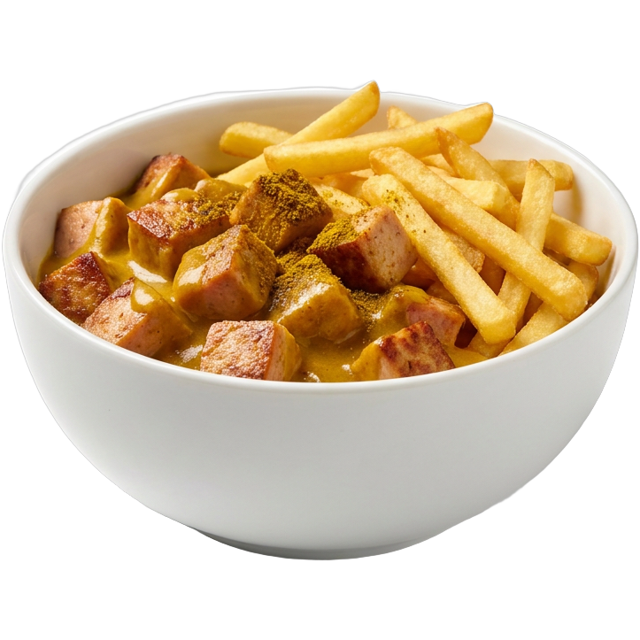
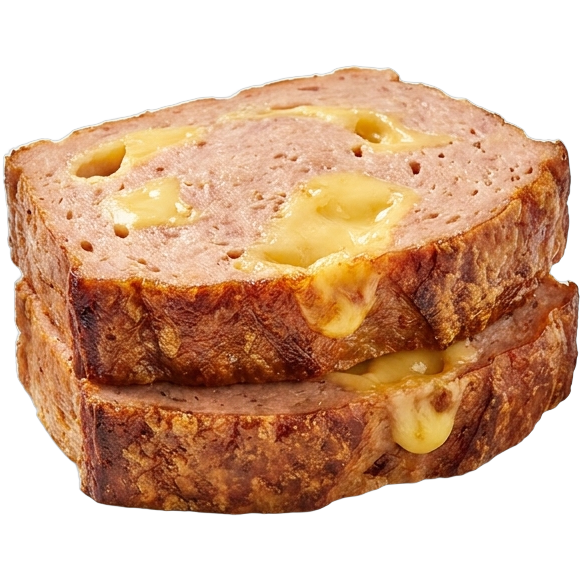
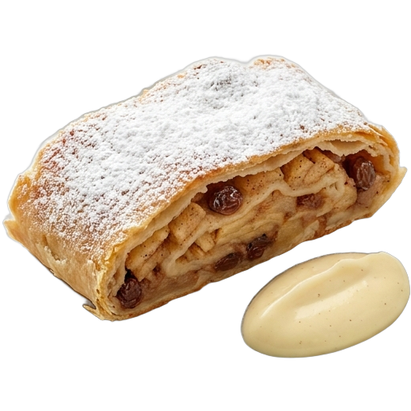
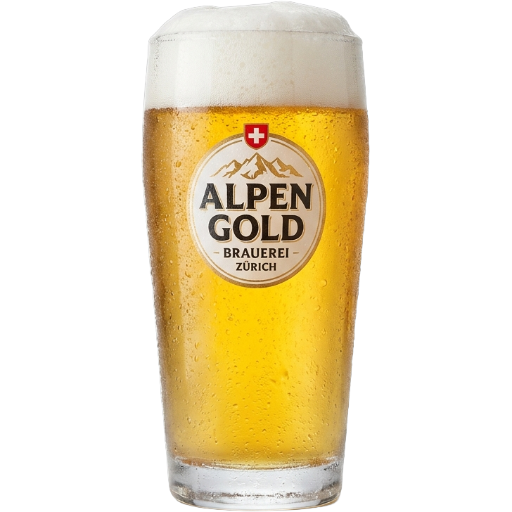

Eckstück-Semmel
CHF 7.50Die knusprig Egge im warme Weggli, mit süessem Senf.
Goldig usse, saftig inne. Mir bache de Leberkäs jede Morge frisch — und s'Eckstück, die knusprig Egge, gits nur bi üs.







Jede weiss es: s'Eckstück vom Leberkäs — die dunkli, karamellisierti Egge — isch de Star. Drum hämmer üs grad danach gnännt.
Üse Leberkäs (im Schwiizer Dütsch au «Fleischkäs») wird i de eigete Manufaktur täglich frisch bache. Aussen rösch und goldig, innen zart und saftig.
Drü Klassiker, frisch parat. Fahr drüber.
Die knusprig Egge im warme Weggli, mit süessem Senf.
Dicki Schiibe, Spiegelei, Bratkartoffle. Wie bi de Grossmuetter.
Gröschtet, mit hausgmachter Currysauce und knusprige Pommes.
Grüezi mitenand
Ob zum Znüni, Zmittag oder eifach für s'Gluschtige zwüschedüre: bi üs gits immer es frischs Eckstück.
Standort & Öffnigszyte ↗